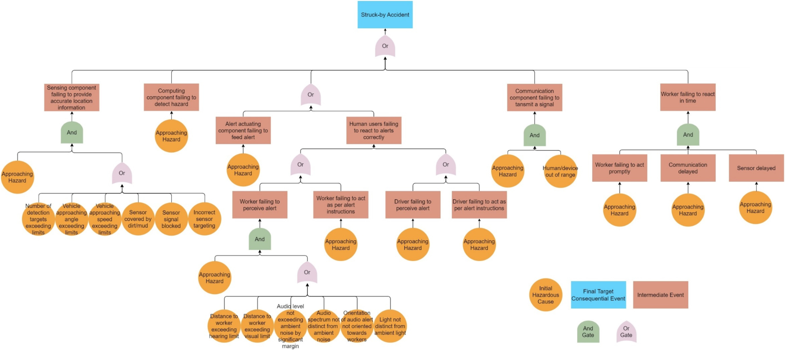
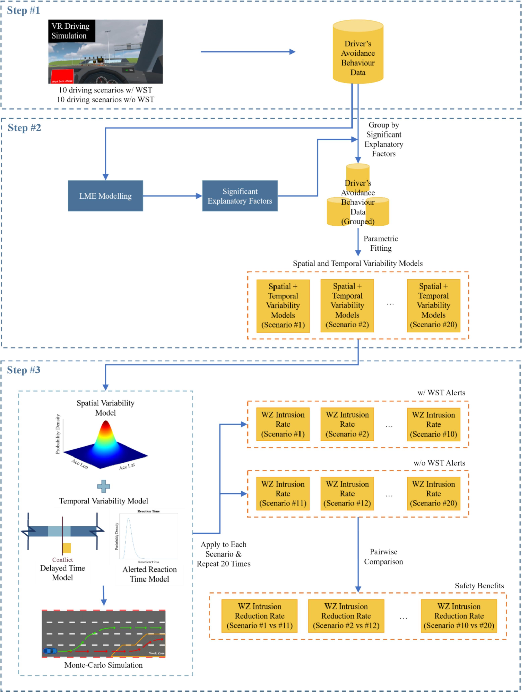

This project developed a performance-based evaluation framework for work zone safety technologies, with a focus on struck-by accident prevention and human behavioural responses. Road work zones expose workers and road users to dynamic hazards, while emerging safety technologies such as alert systems and in-vehicle warnings require robust evaluation before practical deployment. The research reviewed existing work zone safety technologies through a cyber-physical systems lens and examined the completeness of current evaluation methods using an adapted layer-of-protection framework. It also investigated how drivers respond to in-vehicle work zone safety alerts in critical scenarios through virtual-reality driving simulation, behavioural modelling, and counterfactual safety-benefit estimation. By linking technology performance with human response mechanisms, the project provides evidence for evaluating whether safety systems can detect hazards, deliver timely warnings, and reduce collision risk in realistic work-zone conditions. Its outcomes support better design, validation, and adoption of effective work zone safety technologies.

